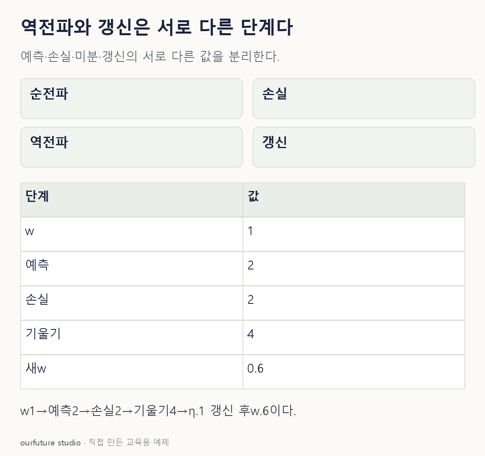

핵심 이론
순전파는 현재 가중치로 예측과 손실을 계산한다. 역전파는 그 계산 경로를 거꾸로 따라 연쇄법칙으로 각 매개변수에 대한 손실의 기울기를 구한다. 기울기는 어느 방향으로 조금 움직일 때 손실이 얼마나 변하는지 나타내는 정보다. 새 가중치 자체와 같지 않다.
단순 경사하강 갱신은 w새=w현재−학습률×기울기다. 같은 기울기라도 학습률이 달라지면 이동량이 다르다. PyTorch의 backward는 기울기를 grad에 누적하는 단계이며 일반적인 학습 루프에서는 optimizer.step 같은 갱신을 따로 호출한다. 누적이 의도되지 않았다면 다음 반복 전에 기울기를 초기화한다.
역전파는 정답을 출력층에 그대로 복사하거나 가중치를 무작위로 섞는 절차가 아니다. 미분 가능한 연산의 연결을 사용한다. 여기서는 스칼라 모형과 제곱손실을 사용해 연쇄법칙의 두 항을 직접 계산한다. 큰 모형의 수렴이나 훈련 성공을 이 예제로 일반화하지 않는다.
작은 예제로 확인하기
ŷ=wx, L=(ŷ−t)²/2, x=2, t=0, w=1이다.
| 단계 | 계산 | 값 |
|---|---|---|
| 순전파 | ŷ=1×2 | 2 |
| 손실 | (2−0)²/2 | 2 |
| 기울기 | (ŷ−t)x | 4 |
| η=0.1 갱신 | 1−0.1×4 | 0.6 |
역전파 직후 기울기만 구한 상태에서는 w=1이다. 마지막 갱신까지 실행해야 0.6이 된다.
그림으로 확인하기

직접 고르기
ŷ=wx, L=(ŷ−t)²/2. x=2, t=0, w=1. 학습률 0.1로 한 번 갱신한다.
갱신 뒤 w는?
- 1. 0.6
- 2. 1.0
- 3. 1.4
- 4. 4.0
정답과 오답의 이유 확인하기
정답 1번 — 0.6
∂L/∂w=(wx−t)x=4다. 따라서 1−0.1×4=0.6이다.
- 2번: 갱신을 하지 않고 기울기만 구했을 때의 w다.
- 3번: 손실을 줄이는 음의 기울기 방향 대신 더했다.
- 4번: 기울기 4를 새 가중치로 착각했다.
조건 하나 바꾸어 풀기
위 조건에서 역전파만 실행하고 갱신 단계를 생략하면 w는?
풀이: 1 그대로다.
기울기 4가 계산되더라도 저장된 매개변수를 바꾸는 갱신을 실행하지 않았다.
다시 떠올릴 단서
역전파는 기울기, 갱신은 새 가중치.
근거와 적용 조건
- PyTorch Automatic Differentiation — Computing Gradients 및 Computational Graphs: backward와 grad 누적. 확인일 2026-10-30.
상황·수치·보기·조건 변경은 자체 교육 예제다. 민간 복원 문항의 공식 정답이나 실제 성능·학습 효과를 뜻하지 않는다.
읽은 내용을 적용해 보기
ŷ=2w, 목표0, 반제곱손실의 한 단계다. backward의 누적 상태나 옵티마이저 전부를 구현한 것은 아니다.